The Branch in a Box
In which a factory-default firewall must become a Department device with nobody touching it.
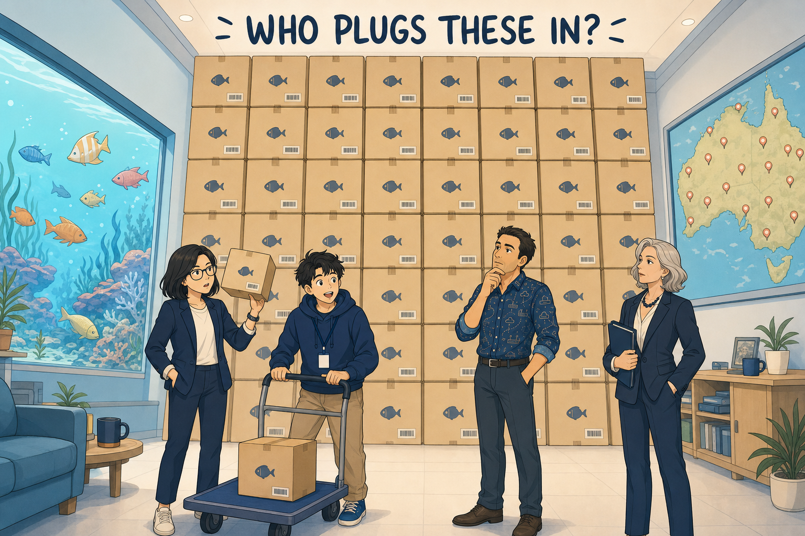
Dr Finch didn't stop at Sydney. Thirty branch FortiGates — ordered, paid for, shipping across every state, to offices nobody in the room had ever visited. And not one of those sites would have a network engineer standing in it when the box was opened.
Which is when Mel Chen came into the story properly. FortiManager and automation. Exacting about templates, mappings, revisions and installation targets in a way that reads as pedantic right up until the moment it saves you.
Samwise reasoned the answer from first principles, out loud, with Gonzalez peeling his orange and letting him. The box has no configuration. It doesn't know the Department exists. So it must discover a management point — a DHCP option handed out by the local network, or a DNS or FortiCloud call-home that redirects it to the right FortiManager. Either way it arrives at the Department's front door carrying the one thing it has that is unique and known in advance: its serial number.
And that's the part that reverses the whole picture. If the serial is the handshake, then FortiManager must already know it — must already know what this box is supposed to become — before the box has even shipped. The mechanism is a CSV import, and the bit everybody misreads is that a row is not inert data. Importing the CSV creates a placeholder device object: real, pre-authorised against one specific serial, sitting in FortiManager like a reserved seat with a name card on it. When the device calls home, it is matched to its placeholder, and the placeholder's device blueprint is pushed down. The device comes up named, addressed, minimally working. Zero on-site CLI.
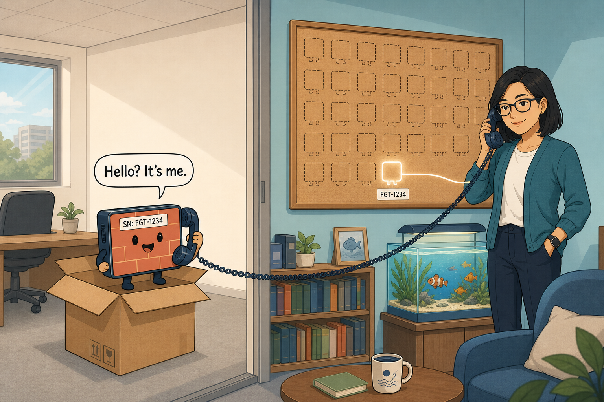
Then Mel drew the line that named the episode. A blueprint is a one-shot recipe. It fires once, at first call-home, and then it is finished — no ongoing link back to the object that created it. Which means the seductive idea of "fixing the fleet by fixing the blueprint" is a fantasy: correct the blueprint after ten branches have provisioned and precisely nothing happens to those ten. Its job ended at their birth. Keeping a fleet raised needs something with an ongoing relationship — a template — and that is the rest of this book.
The episode closed on a troubleshooting scenario that set the evidence discipline for the season. A branch shipped, plugged in, never came up. Samwise reached for "serial mismatch" — plausible, but offered as a conclusion when a second cause sat right beside it. One redirect: what evidence separates them? If the device appears in FortiManager as unauthorised, discovery worked and the match failed — a CSV or serial problem. If it never appears at all, it never reached FortiManager — a discovery or connectivity problem. Same symptom at the user's end; two different investigations; one fact tells you which. And the containment answer to the nervous question about typos: one bad row hurts one device. The other twenty-nine provision normally.
Blueprints get them born. Templates keep them raised. ZTP: discover → authenticate by serial → match the CSV-created placeholder → push the one-shot blueprint. You cannot fix a deployed fleet by editing a blueprint — its relationship with the device ended at birth.
The Source of Truth
In which a 3 a.m. fix survives exactly until the next routine install.
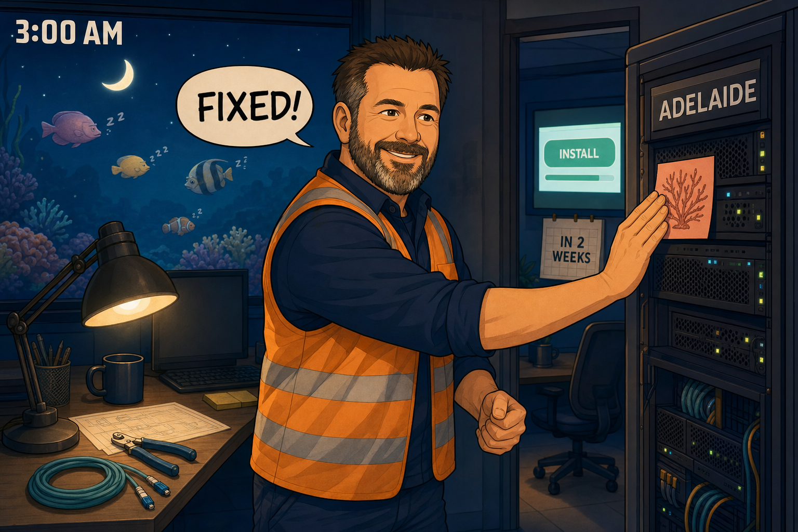
Perth and Adelaide came up. Two branches, provisioned by ZTP, working, and nobody had driven anywhere. Which left Mel with the problem her own closing line had set up: blueprints handle birth. What handles the next five years?
The Adelaide incident answered it the hard way. A FortiManager template is the ongoing source of truth for whatever it manages, and every install reasserts it. Not merges — reasserts. If the template says one value and the device has drifted to another, the install puts the template's value back, quietly, successfully, without a single alarm. Racks' fix wasn't destroyed by anything malicious. It was destroyed by the system doing exactly its job.
But there was a boundary hiding in the wreckage, and it turned out to be the most important sentence of the season: the install only reasserts settings the template actually manages. A local change to something no assigned template has an opinion about survives every routine push. Adelaide's hostname, its DHCP scopes, its local objects — untouched, install after install, because no author writes those pages. Hold that boundary. It becomes the hinge of the finale.
The protective habit came next, and it was Mel's: Install Preview, plus the revision comparison. Before any push, see exactly what it will change on that device — which is how you discover you're about to undo a 3 a.m. fix at 3 p.m. over coffee, instead of at 4 a.m. the following month.
Then Gonzalez, orange in hand, ran three examples and asked for the general rule. A branch's WAN gateway. An SLA latency threshold. Perth's gateway after the ISP renumbers it. The obvious rule — template it if it's the same everywhere — dies on contact, because the gateway differs at every single site and still belongs in the template. Samwise found the real rule underneath: it's not about whether values differ. A setting belongs in the template when it is stable and design-intent-driven — when the template should win any drift contest. It stays device-local when it must change faster than a revision-and-install cycle can turn around. Who owns the change, and how fast must it happen. That's the whole test.
The episode's second act was Dr Finch's requirement: regional contractors should onboard interstate branches without seeing the Department's core. Samwise named ADOMs — Administrative Domains — and Gonzalez settled their shape by contradiction: different branches already need different templates because their hardware differs, so one-template-per-ADOM cannot be the structure. An ADOM sits above templates, as a containing visibility boundary holding as many templates as diversity requires. ADOM answers who can see this. Template answers what design does this device get. Different axes entirely.
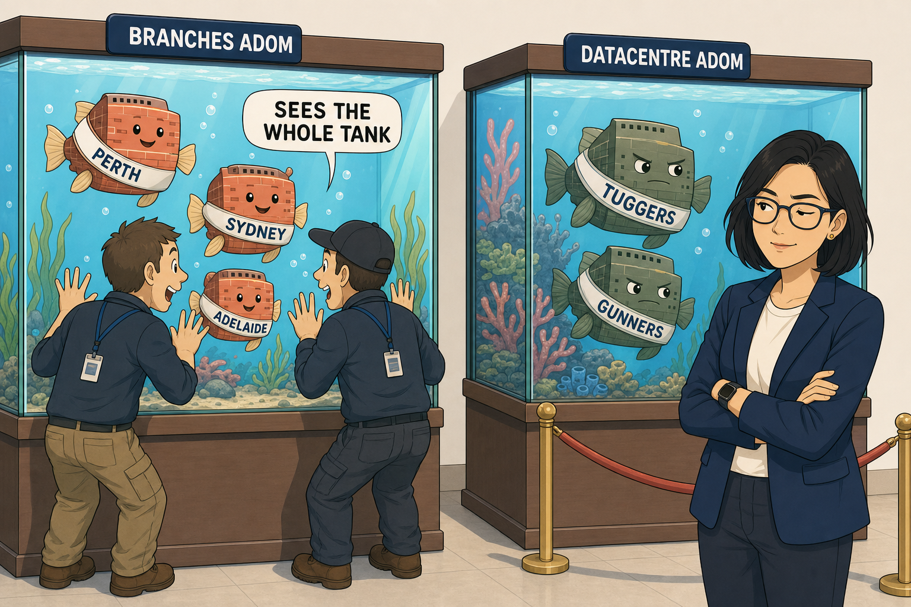
And that image contains the episode's honest limitation, which Samwise found himself: ADOM scope is coarser than site level. Put Perth's contractor and Sydney's contractor in one Branches ADOM and they see each other's devices — which does not meet Dr Finch's requirement. It was left on the whiteboard as an open gap rather than papered over. The Global ADOM, meanwhile, holds shared governance objects — the global database, header and footer packages — and is not where branch templates get authored.
Device-local settings and metadata variables are not two answers to one question. Device-local answers who owns the change and how fast must it move. Variables answer this is already template-owned, but the value differs per device. The variable conversation only starts after a setting has qualified for template ownership — which is exactly where the next episode begins.
One Template, Many Values
In which every branch gets the same recipe with different ingredients.
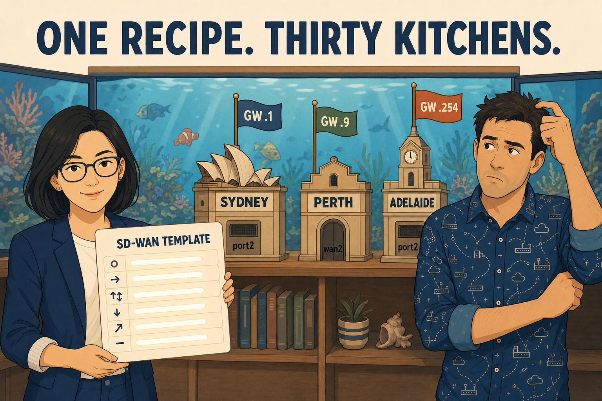
Mel had the ownership model. What she didn't have was the mechanism — the thing that lets one SD-WAN template serve Sydney, Perth and Adelaide when every one of them has a different gateway, a different probe target, and, on some hardware, different interface names.
The mechanism is the metadata variable. In the template you write set gateway {{gateway}} — not a value, a name. The template carries the name and, optionally, a default. Each device carries its own variable mapping table of overrides. At install time FortiManager resolves each name, per device, in strict priority: device override first, template default second — and if neither exists, Install Preview blocks the install for that one device while the rest of the run sails through. Set the common case as the default, override the exceptions, and twenty-eight of thirty branches need no mapping entry at all.
Two properties fell out of the mechanism once Samwise turned it over. First: the FortiGate never sees a variable. FortiManager renders a complete, literal, fully-resolved script per device — which means a variable problem can never be troubleshot on the firewall, because the firewall has no concept that variables exist. Second: variables are pure text substitution, legal in any static field including structural ones — set interface {{wan2_port}} resolves to port2 on one platform and wan2 on another, and one template quietly serves both. (And $(var) versus {{var}}? Two syntaxes, one store. One feature, not two.)
Then came the orphan — the one that needed a full walkthrough, because it spans three moments in time.
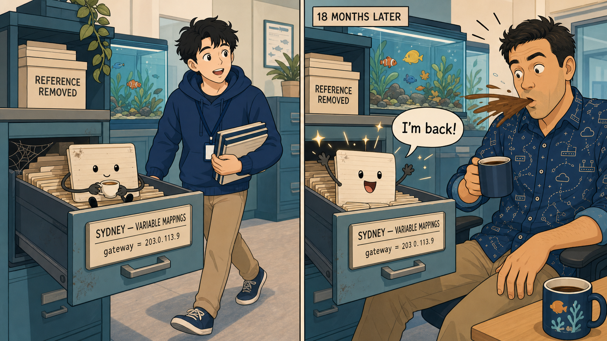
Sydney has an override for gateway. Somebody edits the template and removes the field that referenced it. What happens to Sydney's mapping? Nothing. It isn't deleted; it simply stops being read. It sits in the drawer, inert, dusty — until the day a template edit reinstates the reference, at which point a value somebody set eighteen months ago, for reasons nobody remembers, resolves again immediately and silently onto a production device. Contrast the other operation, the one that sounds the same and isn't: deleting the device's override genuinely destroys its data, after which the device falls to the template default — or blocks, if there isn't one.
The episode closed on the hard one, solved cold, first attempt. Sydney has an override. Perth and Adelaide lean on the template default. Somebody deletes the default. Next install? Sydney installs fine — its override never consulted the default, so the deletion is invisible to it. Perth and Adelaide block — no override, no default, nothing to resolve, and only they block; the run isn't poisoned. Three devices, one change, two outcomes, held in the head at once. That's the shape the exam's harder questions take.
Override → default → block (that device only). The firewall receives resolved literals and has never heard of a variable. Removing a reference leaves device data inert but resurrectable; deleting an override destroys it. Install Preview is the referential-integrity gate — an unresolved variable and a reference to hardware the device doesn't have are the same failure: the template asking for something the device can't provide.
Four Questions Before You Touch a Template
Halfway through the season, Samwise called it himself: "I can define all these things individually and I cannot relate them to each other." Junior — seconded onto the branch build by Dr Finch, who had ruled the rollout could not depend on one person — arrived with the same confusion and a better phrasing: "If I change something in FortiManager, where does that change actually sit before it reaches the firewall?" Teaching him forced the frame into existence, and the rest of the season runs on it.
There are three copies of every configuration: the FortiGate's running config — the only copy carrying traffic; the per-device device database on FortiManager; and the ADOM policy layer. Nothing reaches a firewall until an install runs; "Modified" just means the copies disagree. And the strangest, most load-bearing idea of all: a template is not a place. It is an author. It writes into per-device databases — one-to-many at authoring time, one-per-device at storage time. There is no shared master copy being referenced anywhere; there are thirty separate pages, written by the same hand. Which is exactly why templates beat manual edits: two authors, one page, and the template is the one holding the pen at install time.
The four questions, pinned to the wall: 1. Which layer am I writing into? 2. What scope — who receives it? 3. What goes in the field — literal or variable? 4. What will Install Preview show for the worst device in the group?
The Order They Speak In
In which two correct templates are refused an install because nothing says who goes first.
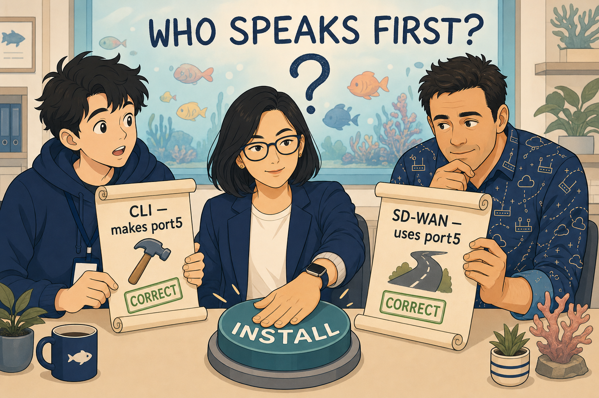
Junior did the work, and he did it correctly. Sydney's local breakout — designed back in Book One, never actually built — now existed as two provisioning templates: a CLI template creating port5 as a WAN interface, and an SD-WAN template adding port5 as a breakout member. Both correct. Both reviewed. And Mel refused to authorise the install.
Samwise's first good move was a distinction the study guide doesn't make. On a 100F, port5 is physical — it exists at power-on, before any configuration is read. The CLI template isn't creating it, only dressing it. So for port5 specifically, ordering is harmless. Then he over-reached — "so ordering doesn't matter" — and recovered inside one redirect, because plenty of interfaces are created by configuration: VLAN subinterfaces, IPsec tunnel interfaces, loopbacks, zones. None exists until a command speaks it into being, and any reference before that command is a reference to nothing.
Which matters because of how the far end reads. The FortiGate is a parser, not a compiler. FortiManager assembles one complete script per device; the FortiGate consumes it line by line, validating each name against what exists at that instant. No forward declarations, no second pass. A reference to a thing not yet created is rejected — and, crucially, everything else still lands.
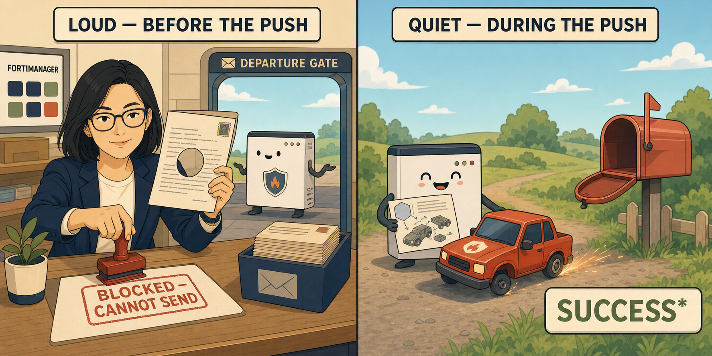
Two failure timings, then, and they are not the same animal. An unresolved variable is caught by FortiManager before the push — the script can't render, nothing reaches the device, the install blocks for that device, loudly. A forward reference is caught by the FortiGate during the push — one line rejected, everything else lands, the device ends up partially configured, the job reads "completed with errors," and the dashboard shows green because the box is up and managed. The quiet one is the dangerous one, because a nearly-configured device reporting healthy is precisely the device that reaches production.
Naming Sydney's actual fault took discipline. Samwise offered three candidates at once — undefined order, collision, overwrite — then eliminated cleanly: the CLI template writes config system interface, the SD-WAN template writes config system sdwan. Different families. No shared setting. So no precedence contest — which means this is not a conflict (two authors, one setting, fix by removing an author; ordering only picks the loser consistently) but a dependency (one author needs another's output, fix by declaring the sequence). Diagnose one as the other and you reach for the wrong mechanism entirely.
The declared sequence became a template group — Branch-Standard: System, CLI, SD-WAN, Static Route, top-down, assigned as one unit to the branch device group. Sydney installed. port5 was created, then attached, in that order, because the order was finally written down. The fix changed neither template.
Behind Sydney sat the thirty-branch question. Brisbane needs an MPLS member; Perth and Adelaide must not have one. The tempting answer — a second, near-identical template group — buys you divergence: every future change made twice by whoever remembers both copies exist, until the day somebody doesn't. The better answer came from asking the questions in the right order — which template type does this live in? SD-WAN, which is structured; and what is that type's structural tool? An installation target. One template for the whole estate; port4's MPLS member targeted at device group Grp-MPLS-Branches; and on any device the target doesn't match, that member is simply absent. Not disabled. Absent.
And on his way out, Racks dropped the line that had been waiting eight episodes: "Tuggers is still throwing more sessions down the two-hundred meg pipe than the five-hundred. That weighting you approved. Remember it?" Approved in Book One. Correct on the day. Never installed — because a change that isn't recorded in a mechanism doesn't exist.
An empty installation target means EVERY device using the template. It is the absence of a filter, not an empty audience — and that's the safe default on purpose: forgetting the field spreads shared members everywhere, rather than onboarding branch thirty-one green with no members at all. Three mechanisms, three questions, never interchangeable: group = who's in the room and in what order they speak; target = who gets handed this sheet; variable = what's written on the sheet.
The Overlay Wizard
In which the estate learns to multiply, and an eight-episode debt is finally paid.
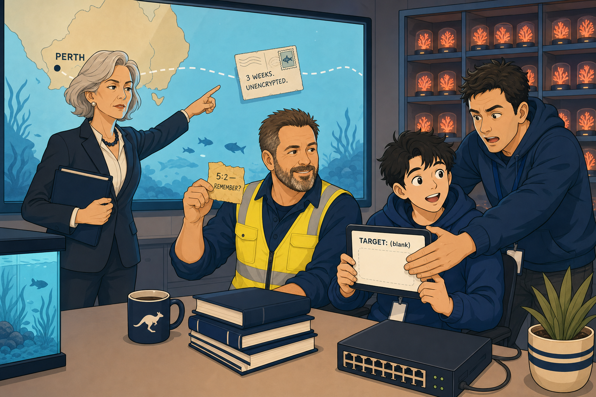
The weighting went in properly at last — a DC-scoped SD-WAN template, the eight-episode debt closed — with one quiet-failure footnote for the collection: a member weight installed while the zone still sits in source-ip-based mode installs cleanly, reports success, and changes nothing at all.
Before the overlay could be built, Chapter Eight's boundary needed sharpening, and Samwise did most of the sharpening himself. His over-reach — "a device is never safe to hand-edit while a template is in play" — collapsed into the precise rule on one nudge: blast radius is the set of config blocks the assigned templates author. Hostnames, DHCP scopes, local objects survive every install, because no author writes those pages. Anything the template writes is borrowed, not owned. And the timing insight that would detonate in the finale: a device safe to hand-edit today can stop being safe without anyone touching it — because its management can change underneath it. Hand-edit safety is a property of the current assignment set, not of the box.
Then Mel opened the orchestrator, and the season's biggest idea walked in wearing a wizard hat.
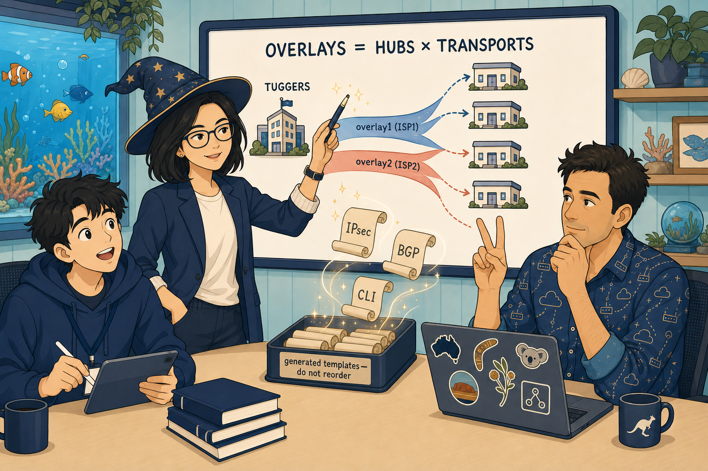
Point the orchestrator at a topology and it generates the IPsec, BGP and CLI templates, adds members and zones to the existing SD-WAN template rather than replacing it, and groups and assigns its own output in the correct order. It never touches a firewall. Everything the season had taught about templates still explains its output — which is exactly what makes tuning it safe, and pulling pieces out of its group unsafe. It asks two kinds of question, and the exam tests them separately: existence prerequisites — hubs as managed devices with links configured, branches in a device group (Samwise derived why himself: a template can't reference a list), a single ADOM, one overlay template per FortiGate — and planning inputs — topology type, overlay address space, loopback space, AS number.
The central model is a multiplication: overlays = hubs × transports, because an overlay is a hub-transport pair, not a transport. That one expression drives tunnel subnets, tunnel interfaces, SD-WAN members and, under the wrong BGP design, session counts. It also means — and this was the episode's exam-critical stumble, corrected on the spot — a second hub does not join the existing overlays. It creates its own full set.
The plan: single hub, Tuggers, over both ISPs. Overlay space 10.200.0.0/14 with two /24s live and two more deliberately reserved for a hub that didn't exist yet. A loopback pool, one address per node, for identity. And the asymmetry that explains every hub/spoke setting at once: the hub's address is static and known in advance, so spokes are static-type initiators; spoke addresses are unknown and mutable, so the hub is a dynamic dial-up server — one stanza serving any number of spokes, net-device disable on the hub, enable on the branch. The spoke dials. The hub answers. The hub cannot dial; it doesn't know the numbers.
For routing, two candidate designs, settled by arithmetic Samwise ran cleanly once the concrete case was framed: BGP-per-overlay meant 240 IBGP sessions across the planned estate; BGP-on-loopback meant 60 — one per hub per branch — with fewer routes, lighter route-reflector load, and no add-path requirement. Loopback won. The recursion underneath it — the second lookup that turns a loopback next-hop into an actual tunnel — did not land this episode, despite two passes. It would have to, soon.
ADVPN was deliberately disabled — deferred, not rejected, because it rewrites the generated templates and shouldn't join the fault surface before the plain overlay is proven. Samwise's line for it was the episode's best: "the hub's a matchmaker, not the middleman." And installation targets earned their keep — the wizard adds to the existing SD-WAN template, so Brisbane's MPLS scoping survived untouched — which prompted the sharpest unprompted question of the season: why does Brisbane carry an MPLS member at all, when no hub has an MPLS link? An orphan. A transport with no far end. It went on the whiteboard, unresolved, waiting for a season that hasn't happened yet.
At 11:52, Perth's two tunnels came up, and the compliance feed crossed the country encrypted for the first time.
Dual hub, two transports = FOUR tunnel subnets, not two. "The second hub joins the existing overlays" is the exam's favourite wrong answer. And network-id is a runtime guard against cross-overlay traffic — not overlap prevention, not an addressing control.
The Second Hub
In which an outage nobody noticed proves more than the outage everybody feared — and a nine-month-old fix quietly dies on a Friday.
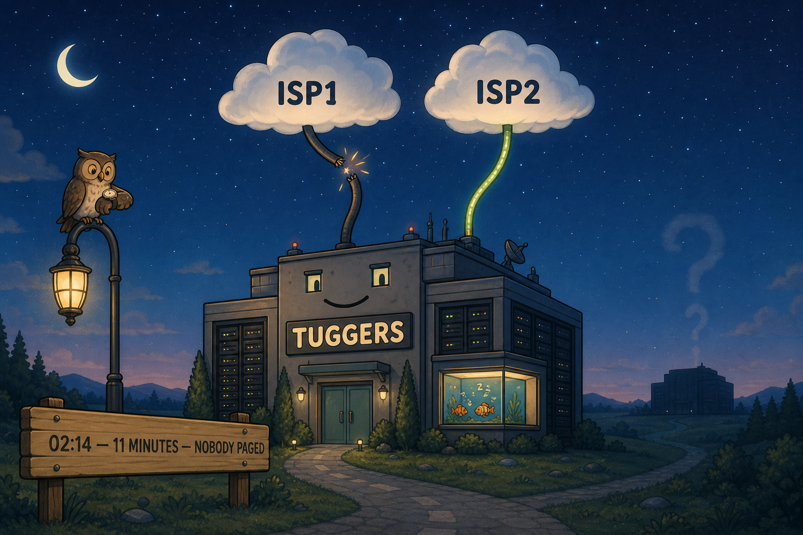
First, the question the 02:14 non-event forced into daylight: why didn't the BGP session even blink when its transport died? This was the season's hardest model, and it did not come cheap — diagrams, a layered topology, a full packet walkthrough, and finally the direct question, out loud: "recursion? is that a route lookup? what is that?"
It is exactly that. Three lookups per encapsulated flow. The inner destination resolves to a next hop — a loopback address. That next hop resolves in turn to the overlay zone — and this second lookup is all recursion is, because a FortiGate can only transmit out of an interface, never merely toward an address; a route naming a next hop but no interface is unfinished. Then, after encapsulation, the outer destination resolves to a physical egress. Only the third lookup touches the underlay, and SD-WAN participates only in member selection between lookups two and three.
So the 02:14 answer: the BGP session terminates on loopbacks, not on a tunnel. When ISP1 died, the routing table did not move — lookup one unchanged, lookup two simply resolving to a smaller member set, the session's own packets flowing over the survivor. That invariance is the entire product the loopback design buys. Samwise's own walkthrough eventually produced the season's cleanest causal line — "BECAUSE overlay1 uses port1, the source IP is port1's, and the IPsec remote gateway is 198.51.100.1" — the member decision driving the encapsulation, in the right causal order. And his unprompted question, where does Perth get the outer destination address?, got the answer that ties the whole season together: remote-gw is static config. The spoke knows the hub's address. That's the asymmetry, again.
One uncomfortable corner before the build: if every overlay to a hub dies, the recursion fails and the prefix leaves the FIB — and the traffic does not blackhole cleanly. It falls through to the default route and dies at the policy lookup, or is NAT'd into nothing. Failure leaks. It doesn't drop.
The conversion itself was nearly an anticlimax, because last episode's arithmetic had already predicted it — and this time Samwise built the plan himself: the two reserved /24s brought live, four overlays, Gunners drawing one address from the same loopback pool — a pool per estate, not per hub. Perth went from two tunnels to four, and Racks' warning about session counts landed exactly on schedule.
Then the trap hiding inside the triumph. Four tunnels, all up, all green — and by default a FortiGate installs a single best path. Without ibgp-multipath enable, the FIB holds one hub's next hop, the SD-WAN rule has no Gunners member to select, and hub failover waits on BGP hold-timer expiry — up to three minutes — while four healthy tunnels sit there, useless. The design decision followed from characterising the layers honestly, and Samwise made it independently: failover is enforced at the SD-WAN layer — SLA-measured, brownout-aware, per-rule — while BGP's only job is keeping both hubs in the FIB so the fast layer has something to choose between. Book One's entire first act was about a link that was up and terrible; BGP is blind to exactly that.
SD-WAN can only choose among members the FIB has already resolved. BGP decides which hubs are candidates; SD-WAN decides which tunnel carries the traffic. Neither can do the other's job — and a rule written as though it can will install clean and do nothing.
And then it was Friday, and Priya was in the doorway. Sydney's local internet breakout — gone. SaaS crawling through Canberra again. Nobody had touched Sydney since October.
Samwise's first hypothesis was right for the right reason: the device didn't change, so its management did. The revision history told the story in three lines. Rev 39, October: a manual CLI change — the breakout, added by hand, back when Sydney had no SD-WAN template assigned and the edit was therefore safe. Rev 40, July: an unrelated install — the breakout survived, because no assigned template authored system.sdwan. Rev 41, Thursday, 16:44: the dual-hub install. Because Thursday's orchestrator re-run had done something nobody registered — it assigned the SD-WAN template to Sydney for the first time. Sydney acquired a new author without being the subject of the change. And the install wrote system.sdwan in full from a template that had never heard of port5.
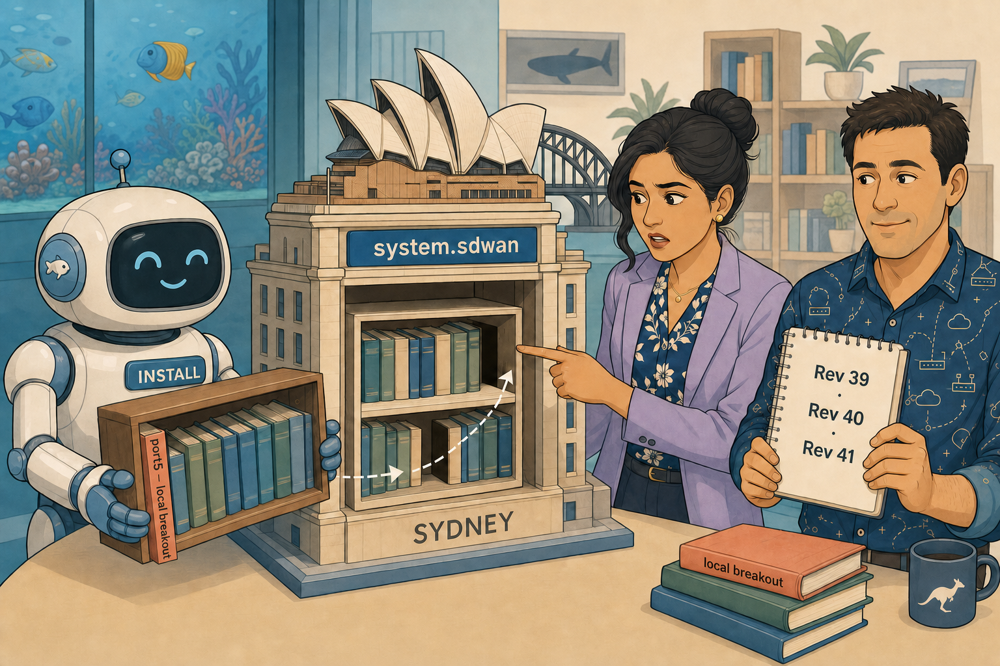
An authored block is replaced whole. Install is not a merge. Within a block a template authors, absence is deletion. No error, no alarm — the install reported success because it succeeded. October's CLI change was never wrong; it was a countdown, started the moment a template that authors that block could one day arrive. The fix, specified by Samwise at both levels: put the breakout member in the template — accept it as the single author of system.sdwan estate-wide — and scope it with an installation target of Sydney. Episode Ten's mechanism, closing Episode Ten's loose end. Sydney restored, 09:41. His sharpest operational question — did Mel run Install Preview? — opened the honest answer: preview is per-device, people sample, and an authored block shows absence, which is far harder to notice than a deletion.
The season's last piece went up on the wall before anyone went home. FortiManager already measures drift, continuously, in the Config Status column: Modified means FortiManager changed and the firewall hasn't been told; Out-of-Sync means the firewall changed outside FortiManager — a question, not a status. Retrieve Config imports the drift but does not reconcile it with the template; the next evaluation writes over it again. And one correction en route: assignment plus evaluation writes the device database immediately, no install, no warning — the install gap is device DB to firewall, always FortiManager → FortiGate. The standing rule, adopted unanimously: no install runs while any device in the target set reads Out-of-Sync.
Mel's closing line is the hook for everything that comes next: twenty-five branches land next quarter — and there is no route policy anywhere in the estate. Every prefix is currently accepted, advertised and preferred by accident. Season Three opens exactly there.
Department Topology — End of Season Two
Everything Book Two built, on one wall.
🏢 Headquarters
NOC / SOC · the desk everything happens at
⚓ Hubs — dual as of EP-12
wan1-zone: port1 500Mb + port2 200Mb
volume mode, weights 5:2 (debt closed)
dial-up server · net-device disable
proven in the Book One DR test
loopback 10.200.1.2 — same pool
fallback via SD-WAN rule priority
🐟 Spokes
port5 local breakout — now
template-owned, target: Sydney
encrypted since 11:52, EP-11
3 a.m. overwrite lesson
static to Sydney — unverified
orphaned MPLS member (no hub carries MPLS)
ZTP-ready · Branch-Standard group
SD-WAN_Branch-Standard template
The Flip-Card Wall
Answer out loud before you flip. A correct answer after peeking doesn't count — house rules.
Every device using the template. Empty = the absence of a filter, not an empty audience. It's the safe default: forgetting the field spreads shared members everywhere, rather than onboarding a branch with no members at all.
Four. Overlays = hubs × transports, because an overlay is a hub-transport pair. A second hub doesn't join existing overlays — it creates its own full set. (Shortcut holds only when every hub carries every transport.)
Modified = FortiManager changed and the firewall hasn't been told (device DB ahead). Out-of-Sync = the firewall changed outside FortiManager. Out-of-Sync is a question, not a status — and Retrieve Config imports the drift but does not reconcile it with the template.
Default behaviour installs a single best path. Without ibgp-multipath enable the FIB holds one hub's next hop — SD-WAN has no second-hub member to select, so failover waits on BGP hold-timer expiry. BGP decides which hubs; SD-WAN decides which tunnel.
Nothing. A blueprint is a one-shot recipe fired at first call-home, with no ongoing link. Fixing the fleet needs a live object — a template — because blueprints get devices born; they don't keep them raised.
Override → default → block. The override wins; the default catches devices without one; with neither, Install Preview blocks the install for that device only — the rest of the run succeeds. The FortiGate itself only ever receives resolved literals.
Removing the reference leaves the device's mapping untouched but inert — and it resurrects silently if the reference returns. Deleting the override destroys the device's data; it then falls back to the default or blocks. One stops reading data that still exists; the other destroys it.
Unresolved variable — caught by FortiManager before the push: device unchanged, install blocked, loud. Forward reference — caught by the FortiGate during the push, line by line: one command rejected, everything else lands, device partially configured, dashboard green. The quiet one is the dangerous one.
net-device: which value on the hub, which on the branch — and the two independent reasons?Disable on the hub — hundreds of dial-up child interfaces is real overhead. Enable on the branch — few tunnels, and it's required for ADVPN shortcut support later. Same setting, opposite values, two unrelated justifications.
The prefix leaves the FIB — and traffic does not blackhole cleanly. It falls through to the default route and dies at the policy lookup, or is NAT'd into nothing. Failure leaks; it doesn't drop.
Not Sydney. Its assignment set. The orchestrator re-run assigned the SD-WAN template to Sydney for the first time — and the next install wrote system.sdwan whole. Absence inside an authored block is deletion. Hand-edit safety is a property of the current assignment set, not the box.
Assign = binding. Evaluation writes the resolved config into the per-device DB on FortiManager immediately — no install, no warning. Install = device DB → firewall. An install is always FortiManager → FortiGate, and Install Preview diffs device DB against running config — not template against device.
The Field Guide — What Book Two Actually Built
The compressed version. Season Three stands on all of it.
get router info routing-table details <ip> # follow the recursion yourself get router info bgp network # what BGP knows vs what forwards diagnose sniffer packet any '<filter>' # see the encapsulation boundary set ibgp-multipath enable # both hubs into the FIB Device Manager > Config Status # Synchronized / Modified / Out-of-Sync Revision History + per-revision diff # Rev 39 / 40 / 41 told the whole story Install Preview (per device) # device DB vs running config
ZTP diagnostics — one fact splits two investigations
| Observation | What it proves | Investigate |
|---|---|---|
| Device appears as unauthorised | Discovery worked; the match failed | CSV / serial number |
| Device never appears | Never reached FortiManager | DHCP option, DNS, FortiCloud, WAN link |
Variables — two operations that sound alike
| Operation | Device's data | Next install |
|---|---|---|
| Remove the variable's reference from the template | Untouched — inert, silently resurrectable | Setting isn't written at all |
| Delete the device's override | Destroyed | Template default, or block if none |
Two failure timings
| Unresolved variable | Forward reference | |
|---|---|---|
| Caught | Before push, by FortiManager | During push, by the FortiGate |
| Device state | Unchanged | Partially configured |
| Job result | Blocked for that device | "Completed with errors" |
| Dashboard | Obvious | Looks green |
| Character | Loud — stops you | Quiet — the dangerous one |
Template capabilities — one shared row
| Metadata variables | Installation targets | Jinja logic | |
|---|---|---|---|
| Structured (System, SD-WAN, Static Route, BGP, IPsec, Cert) | Yes | Yes | No |
| CLI | Yes | No | Yes |